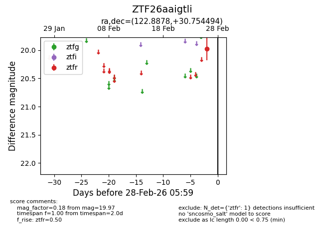
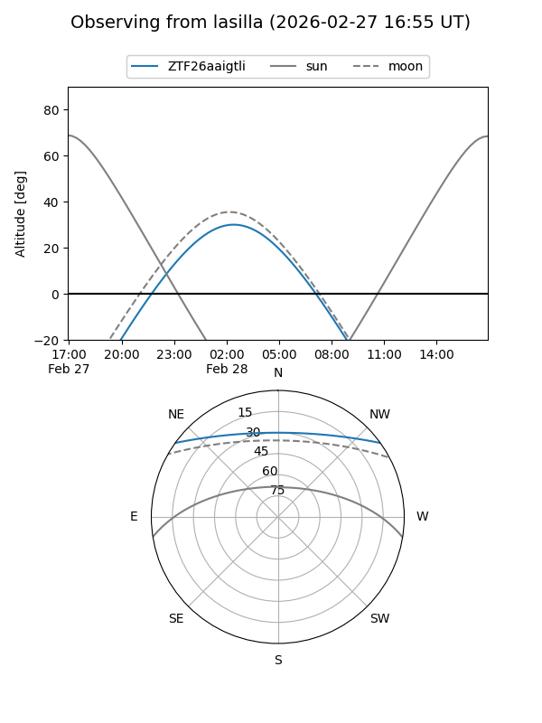
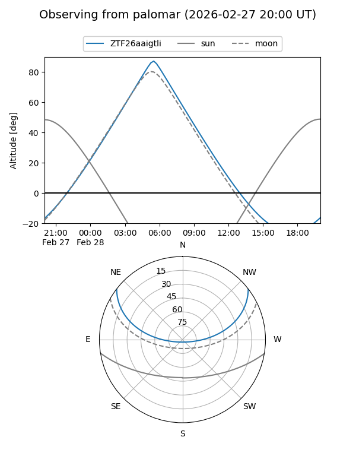

ZTF26aaigtli
Target ZTF26aaigtli at 2026-02-28 06:00
Aliases and brokers:
FINK: link
Lasair: link
ALeRCE: link
alt names
ZTF26aaigtli (ztf,fink_ztf)
Coordinates:
equatorial (ra, dec) = 122.8878,+30.75449
equatorial (HMS+DMS) = 08:11:33.08,+30:45:16.18
galactic (l, b) = (191.2565,+29.67723)
Flags:
Photometry:
last ztfr=19.97
1 ztfr detections
Lightcurve

Visibility


Additional plots